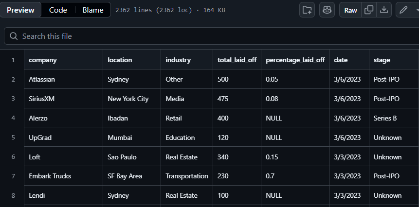
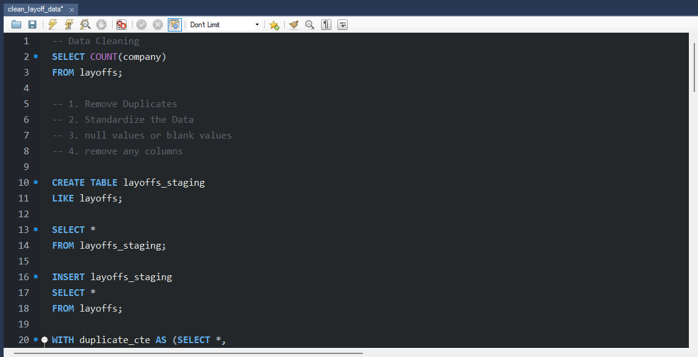
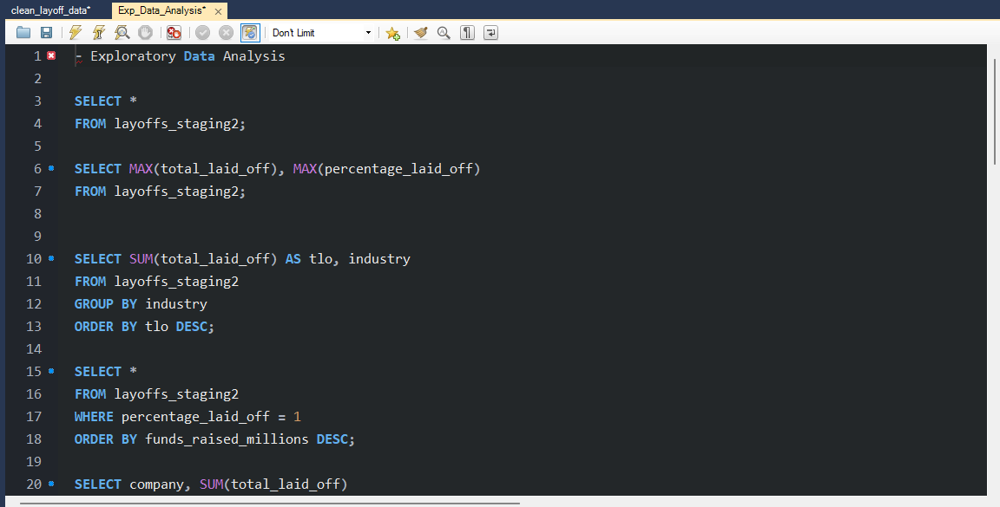

Global Layoffs Analysis
Overview
In 2024 I completed an independent end-to-end data cleaning and exploratory analysis project using MySQL to investigate global tech layoff trends across companies, industries, and time.
Data Sources
The project was built from a raw CSV file containing 2,361 records with fields including 'company', 'country', 'total_laid_off', 'funds_raised_millions', 'stage'.

Data CLeaning
I removed duplicates and unnecessary columns, standardized the data correcting for inconsistencies in spelling and data types resulting in improved data integrity across the dataset. Overall, records were reduced from 2,361 to 1,995 after removing duplicates and null-heavy rows.

Exploratory Analysis (Key SQL Queries)
To analyze the dataset, I wrote SQL queries that explored:
- Rolling monthly total of layoffs using a CTE + SUM() OVER() window function
- Year-over-year company ranking using DENSE_RANK() partitioned by year
- Identified companies where percentage_laid_off = 1 (complete shutdowns), ordered by funds raised — highlighting well-funded companies that still failed

Insights
Technologies Used
- MySQL — data cleaning, transformation, and exploratory analysis
- CTEs — for duplicate detection and multi-step ranking logic
- Window Functions — ROW_NUMBER(), DENSE_RANK(), rolling totals
- DDL/DML — CREATE, INSERT, UPDATE, DELETE, ALTER
- String & Date Functions — TRIM(), STR_TO_DATE(), SUBSTRING(), LIKE
GitHub Repository
View the full project on GitHub:
Global Layoffs Analysis